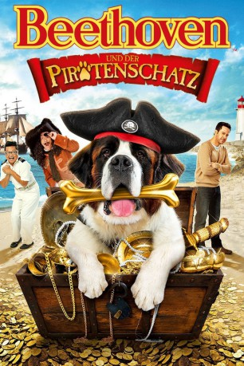

#4410 Beethoven und der Piratenschatz
Alternativ: Beethoven's Treasure Tail (Englischer Titel)
 
 IMDB-Wertung: 4.7 / 10
IMDB-Wertung: 4.7 / 10  Metascore: 0
Metascore: 0 
Beethoven und sein Trainer Eddie stranden in einem verträumten Küstenort. Als Beethoven und ein kleiner Junge eine geheimnisvolle Schatzkarte finden, machen sie sich gemeinsam auf die Suche nach dem Gold der Piraten. Hat Beethoven den richtigen Riecher?
Jahr: 2014
Dauer: 97 Minuten
FSK: 0
Land: Studio: Universal Studios Home EntertainmentTonspuren: DD5.1 - ,
Untertitel:
Auflösung: 720p (1280x720) Größe: 5345 MB
Genre: Familie
Regisseur:  Ron Oliver
Ron Oliver
Drehbuch: Lucio De Caro
Soundtrack:
Darsteller:
 Jonathan Silverman als Eddie Thornton
Jonathan Silverman als Eddie Thornton Kristy Swanson als Anne Parker
Kristy Swanson als Anne Parker- Bretton Manley als Sam Parker
 Jeffrey Combs als Fritz Bruchschnauser / Howard Belch
Jeffrey Combs als Fritz Bruchschnauser / Howard Belch Alec Mapa als Simon
Alec Mapa als Simon Jayne Eastwood als Grace O'Malley
Jayne Eastwood als Grace O'Malley- David DeLuise als Phil
 Brian George als Trentino
Brian George als Trentino Udo Kier als The real Fritz Bruchschnauser
Udo Kier als The real Fritz Bruchschnauser- Colin Mochrie als Dr. Kelp
- Richard Dumont als Duncan
 Morgan Fairchild als Charlene
Morgan Fairchild als Charlene- Patrick Kwok-Choon als Justin
- Brian Downey als Norman the Magician
 Dee Bradley Baker als Animal Sounds
Dee Bradley Baker als Animal Sounds- Ian Tench als Film Crew Member
- Nikki Barnett als Assistant Director
- J. Thomas Scott als Captain Patrick O'Malley
- Jacob Sampson als Burly Crew Man
- Onika Drabble als Sandra
- Katherine Shore als Callie
- Aaliyah Arab als Little Girl with Bike
- Marguerite McNeil als Lady at Bus Stop
- Cujo als Beethoven
- James Start als Tony
- Melissa Hinckley als Casino Patron , uncredited
- Kevin Kumar-Misir als Casino patron , uncredited
Datei: X:\Kinder Collections\Beethoven\Beethoven und der Piratenschatz (2014, FSK0, 1280x720).mkv seit 13.09.2016
Festplatte: Kinder-Filme+Trick
 Es gibt insgesamt 8 Filme in der Gruppe 'Kinder Collections\Beethoven'
Es gibt insgesamt 8 Filme in der Gruppe 'Kinder Collections\Beethoven'